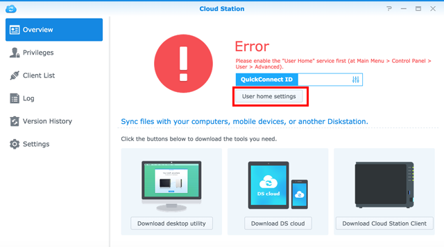
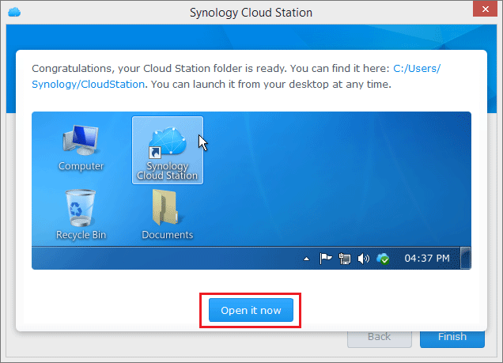

Omówienie
Cloud Station dla serwerów Synology NAS jest aplikacją przeznaczoną do synchronizacji plików, która umożliwia synchronizację plików przechowywanych na serwerze Synology NAS z innymi urządzeniami, takimi jak komputery lub urządzenia przenośne (za pomocą aplikacji DS cloud). Po zainstalowaniu aplikacji Cloud Station na zarówno serwerze Synology NAS, jak i komputerze, pliki przechowywane w określonym folderze komputera będą automatycznie synchronizowane z serwerem Synology NAS.
1. Instalowanie aplikacji Cloud Station
- Przejdź do Centrum pakietów, znajdź pakiet Cloud Station, a następnie kliknij przycisk Instaluj.

2. Włączanie aplikacji Cloud Station
- Uruchom aplikację Cloud Station.
- Jeżeli jeszcze nie została włączona funkcja folderów domowych użytkowników, pojawi się odpowiedni monit. Kliknij przycisk OK. 
- Nastąpi przekierowanie do strony Ustawienia użytkownika. Zaznacz pole wyboru Włącz foldery homes użytkowników i kliknij przycisk Zastosuj.
- Po powrocie do Cloud Station zostanie wyświetlony monit o jej włączenie. Kliknij przycisk Tak.
- Przejdź do strony Uprawnienia i określ, którzy użytkownicy mogą korzystać z aplikacji Cloud Station. Kliknij przycisk Zapisz.


3. Instalowanie klienta i jego włączanie
- Wybierz pozycje Cloud Station > Przegląd, a następnie kliknij przycisk Komputery.
- Kliknij przycisk, aby pobrać aplikację Cloud Station przeznaczoną do posiadanego systemu operacyjnego. (Aplikację Cloud Station można także pobrać z Centrum pobierania Synology).
- Na komputerze uruchom instalator i postępuj zgodnie z instrukcjami wyświetlanymi na ekranie.
- Po instalacji uruchom aplikację Cloud Station na komputerze. Kliknij przycisk Rozpocznij teraz.
- Wprowadź adres serwera Synology NAS z uruchomioną aplikacją Cloud Station (lub identyfikator QuickConnect ID), nazwę użytkownika i hasło. Można kliknąć ikonę wyszukiwania po prawej stronie, aby wyszukać adresy IP w sieci lokalnej. Kliknij przycisk Dalej.
- Określ sposób konfiguracji zadania (w tym przykładzie zostanie wybrana opcja Szybka konfiguracja), a następnie kliknij przycisk Dalej.
- Kliknij przycisk Zakończ, aby zakończyć konfigurację folderu Cloud Station.
- Kliknij przycisk Otwórz teraz, aby otworzyć folder Cloud Station. 
- Ikonę aplikacji Cloud Station można znaleźć na pasku zadań.
- Kliknij dwukrotnie ikonę aplikacji Cloud Station, aby otworzyć menu paska zadań. W menu paska zadań wyświetlany jest postęp synchronizacji i stan plików. Kliknij polecenie Główna aplikacja, aby uruchomić aplikację Cloud Station.
- Po uruchomieniu zostaną wyświetlone porady dotyczące korzystania z aplikacji Cloud Station. Kliknij strzałkę w prawo, aby wyświetlić następną poradę, lub kliknij polecenie Przejdź do samouczków online, aby uzyskać więcej informacji. Aby wyłączyć porady, zaznacz pole wyboru Nie pokazuj tego ponownie.
- Można przystąpić do zarządzania zadaniami synchronizacji w aplikacji Cloud Station.


4. Synchronizowanie danych z urządzeniami przenośnymi
Aplikacja DS cloud jest dostępna bezpłatnie w sklepach Apple App Store i Google Play Store. Można także zeskanować poniższy kod QR, aby pobrać ją bezpośrednio.